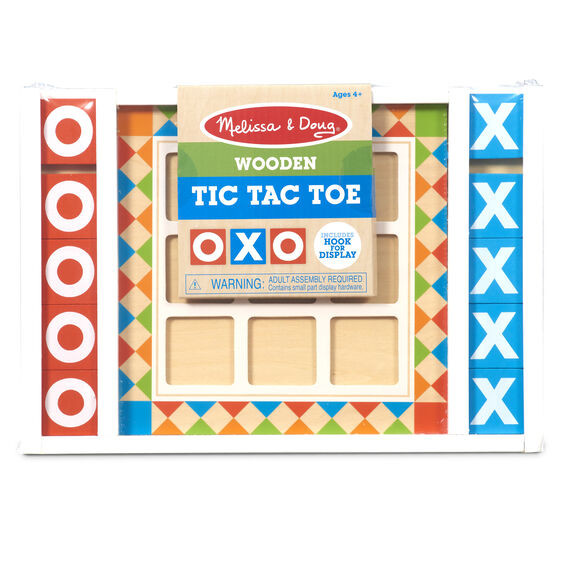

Wooden Tic Tac Toe
Arts and Crafts
R275Wooden tic-tac-toe game board with eye-catching red, orange, blue, and green color pattern Includes white-framed wooden board with indented squares for mess-free play, 10 colored X and O game tiles, hanging hardware, detailed game instructions, and challenging variations Fresh, modern design and high quality materials make this set beautiful enough to display on the wall as unique room décor with included hanging hardware; coordinates with other Melissa & Doug classic wooden games Smooth game pieces store on sides of the game board Ages 4+; 12.5
Enquire about this productWooden Tic Tac Toe at Kids Corner KZN
Wooden Tic Tac Toe is part of our Arts and Crafts collection. Kids Corner KZN stocks toys for learning, pretend play, creative play, gifting and everyday childhood discovery in South Africa.
Browse more Arts and Crafts toys